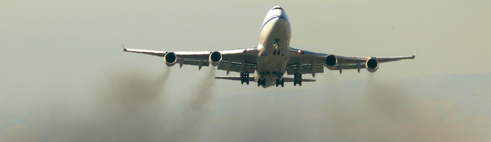

Another reason not to choose delta airlines is because it is extremely damaging on the environment. It tries to look green but according to climaterealism.com, "Essentially, Delta is just making a marketing ploy to appear they are being 'socially responsible' to potential customers. In fact, it is very likely that when all of the numbers are actually analyzed, they will be not be significantly more 'carbon neutral' than they are now."
